Automating the Web
Hello!
- My name is Matt
- It's nice to see you
- Thank you for coming

TL;DR
- Web scraping (extracting data from web sites)
- Programmatic interaction with web sites
- Consuming web services / APIs
- Acceptance testing

There Will Be Slides
matthewturland.com/presentations

Go Ahead, Hashtag It
- Feel free to live-tweet/toot!
- Hashtag:
#longhornphp - Feel free to @ me

The Book Was Better
Composer
Packages: find, install, and autoload them

Obligatory Disclaimer
- Some uses of this content may have unclear or lacking legality
- This content is intended to be strictly educational, not prescriptive or legal advice
- If in doubt, consult a lawyer (i.e. not me)
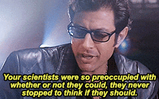
Storytime

This is Lafayette
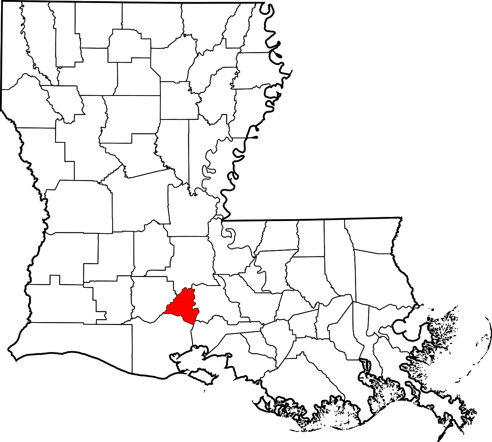
This is Lafayette 911
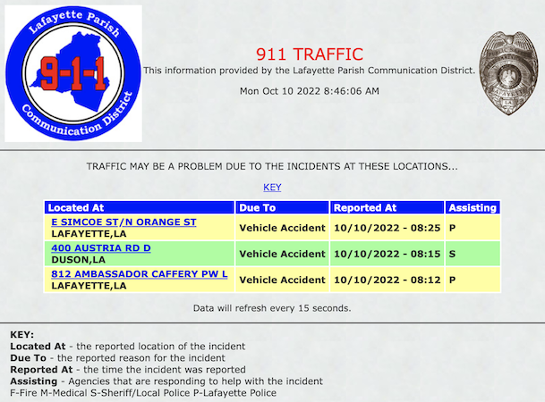
This is Ray
Ray Created a Viewer
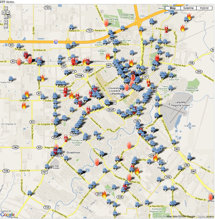
Blog Post circa 2010
Six Months Later...
... He Had a Lot of Data
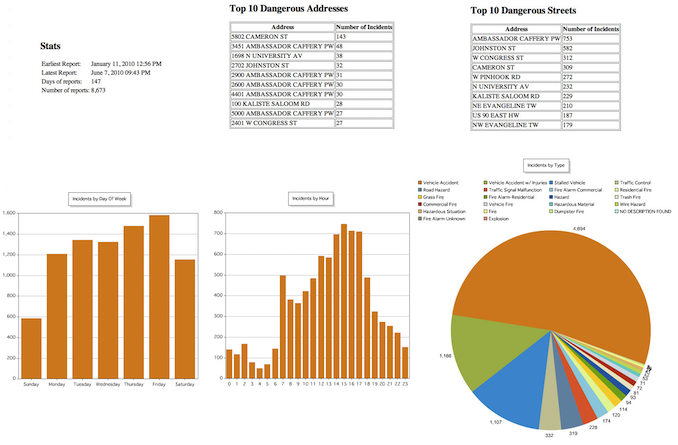
Blog Post circa 2010
Can We Recreate It?
Use the Source, Luke
Chrome / Firefox: Right-click > View Page Source
Use the Source, Luke
Into the Fire & Frames
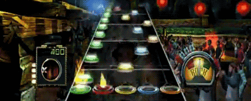
Into the Fire & Frames
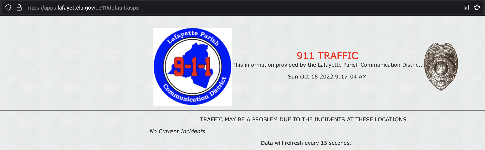
Into the Fire & Frames
Where's the Data?
Some Possible Sources
XmlHttpRequest(XHR)- JavaScript-initiated refresh
- e.g.
assign(),reload()orreplace()methods ofLocation
- e.g.
- Markup-initiated refresh
Learn the DevTools
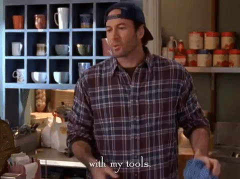
Check for XHRs
- Chrome / Firefox: DevTools > Network tab
- Chrome: Fetch/XHR filter, Firefox: XHR filter
- Chrome / Firefox: click request in table
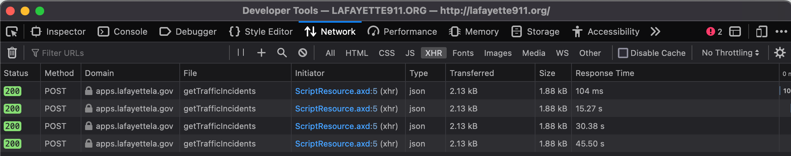
Inspect the Request
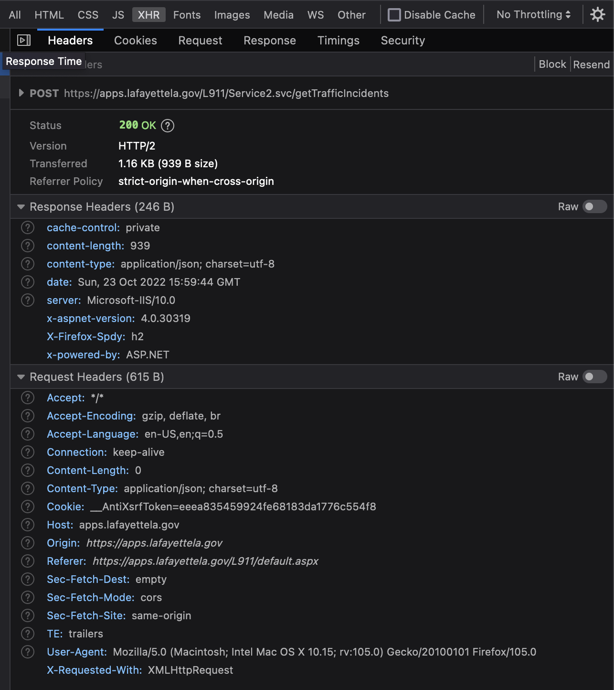
Inspect the Request
POST /L911/Service2.svc/getTrafficIncidents HTTP/2
Host: apps.lafayettela.gov
...
Inspect the Request
POST= method or operation/L911/Service2.svc/getTrafficIncidents= Uniform Resource Identifier (URI)HTTP/2= client protocol and versionHost= header nameapps.lafayettela.gov= header value...= request body
Inspect the Response
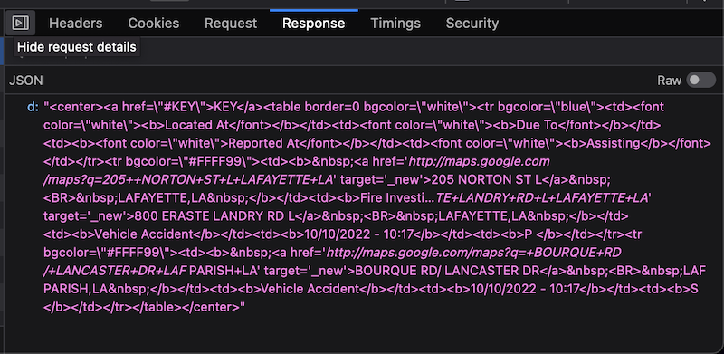
Inspect the Response

Inspect the Response
HTTP/2= server protocol and version200= status codeOK= status descriptioncache-control= header nameprivate= header value{"d":"..."}= response body
HTTP
- RFC 7230: Hypertext Transfer Protocol (HTTP/1.1): Message Syntax and Routing
- RFC 6265: HTTP State Management Mechanism
- "Learning HTTP/2: A Practical Guide for Beginners" by Stephen Ludin and Javier Garza
- "HTTP: The Definitive Guide" by David Gourley and Brian Totty
- Ben Ramsey's blog series on HTTP status codes
Mimic the Request
Mimic the Request
Text Fu
Programmers manipulate text the same way woodworkers shape wood. "The Pragmatic Programmer: Your Journey to Mastery, 20th Anniversary Edition" by David Thomas and Andrew Hunt

Extract the Markup
Inspect the Markup
Handle Malformations

Handle Malformations
- Install tidy extension
- Optionally, configure its options
- Parse markup
- Verify that malformations don't cause data loss
Handle Malformations
Handle Malformations
Parse the Markup
Parse the Markup
Parse the Markup
Parse the Markup
To use CSS selectors: symfony/css-selector
CSS Selectors
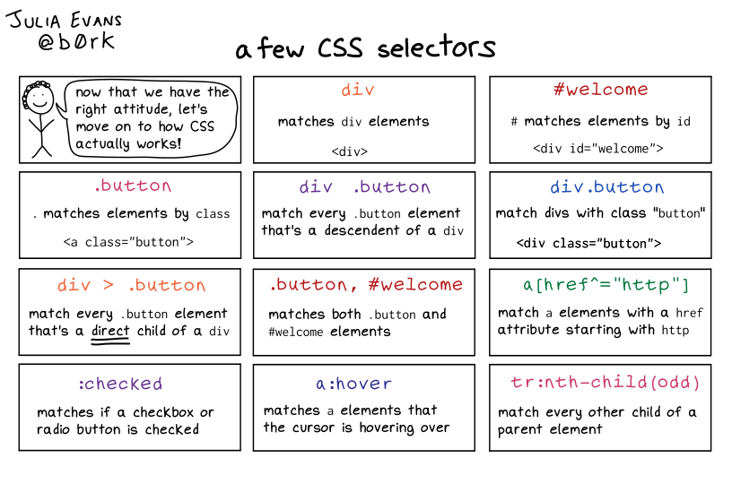Trim the Address
Parse the Address
Regular Expressions
/.../- expression delimiters[...]- character class or range+- quantifier for 1 or more instances|- alternation\s- escape sequence for whitespace characters{2,}- quantifier for 2 or more instances
Regular Expressions
- "Mastering Regular Expressions" by Jeffrey E. F. Friedl
- Regular Expressions: Now You Have Two Problems by Jeff Atwood
- Regular expressions! by Eric Wastl
Parse the Date
Thank This Guy
We Did It!

Now What?
- Store data in JSON files or a database
- Put it behind a web server or API
- Add a Google Maps frontend
- Profit!
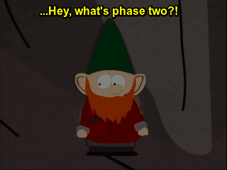
Lafayette Traffic
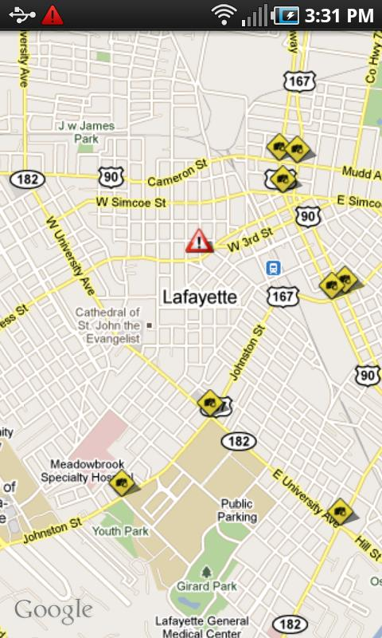 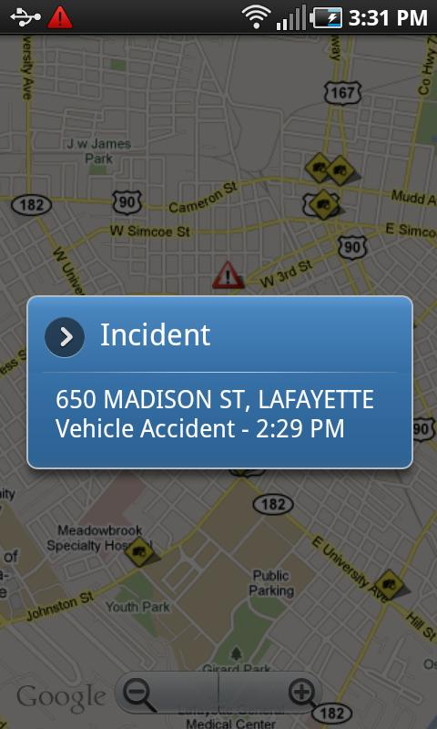 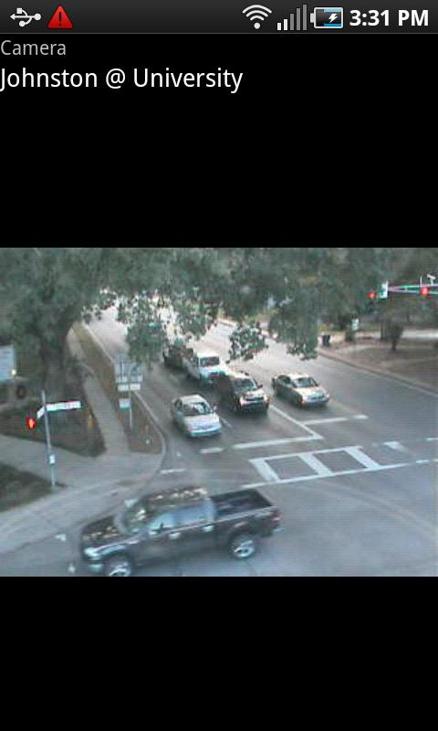
Google Play / GitHub Android, Data
So What?
On JIRA, Briefly
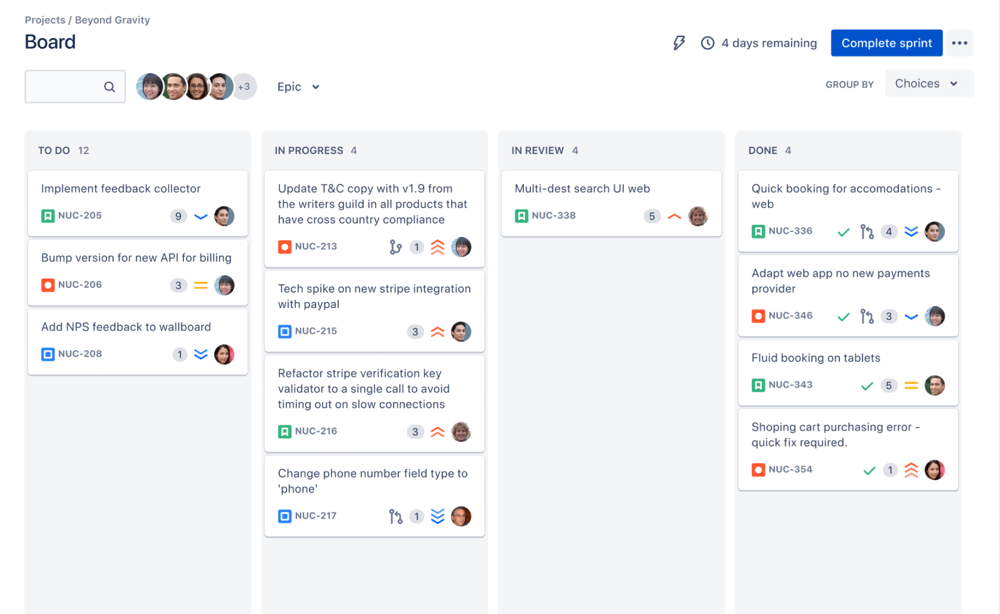
Standards
- PSR-7 - psr/http-message
- PSR-17 - psr/http-factory
- PSR-18 - psr/http-client
- More PSRs at php-fig.org

cURL
- CLI client utility and library for HTTP/HTTPS
- Related: PHP cURL extension
- CLI client utility is useful for debugging and recreating requests in PHP
Copy as cURL
- Chrome: DevTools > Network tab > right-click request > Copy > Copy as cURL
- Firefox: DevTools > Network tab > right-click request > Copy Value > Copy as cURL
Recreate Requests
- Install
frizz925/curl-parser - Provide copied cURL command to parser
Recreate Requests
Extract request data
Recreate Requests
Get request object
Send a Request
- Install
guzzlehttp/guzzle - Create the client
- Configure options and send the request
Using Responses
Debug Requests
- Install
alexkart/curl-builder - Download cURL
Debug Requests
Convert request to server request
Debug Requests
Convert server request to cURL command
Debug Requests
Tweak cURL command as needed
Debug Requests
Run the cURL command
Repeat Requests
- Install
deviantintegral/har - Conflicts with
frizz925/curl-parserdue to
disparities inguzzlehttp/psr7versions
Repeat Requests
- Chrome: DevTools > Network tab > right-click in request pane > Save all as HAR with content
- Firefox: DevTools > Network tab > right-click in request pane > Save All as HAR
- HAR Analyzer
Repeat Requests
Bring Out the Big Guns
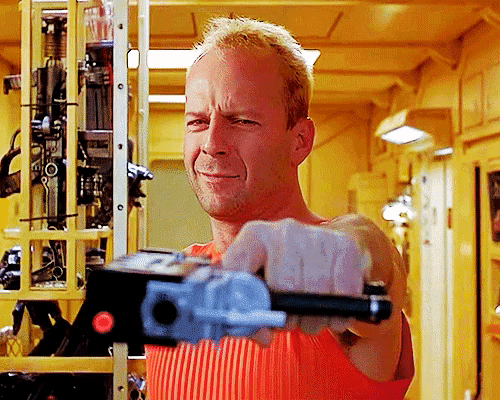
Automate the Browser
- Install
symfony/panther - Install
dbrekelmans/bdi - Install browser driver(s)
Automate the Browser
Automate the Browser
This is Fine
- WAF = Web Application Firewall
- May detect and block automated clients
- Related blog posts: Part 1, Part 2

WebDriver Flag
- Required by WebDriver implementations
- Reveals control by automated means
- How to remove it (h/t SO)
WebDriver Flag
Blink Flag
- Blink = rendering engine in Chrome browsers
- How to disable the flag (h/t SO)
- Index of Blink runtime features
Other WebDriver Flag
- Required by WebDriver implementations
- Reveals control by automated means
- Not especially helpful mention of it (thanks SO)
Other WebDriver Flag
Headless Mode
Quick Demo
Debugging Tips
- Use a logger, like
monolog/monolog - Use
sleep()to block execution
Free Project Idea
- PsySH
- Add integration with
symfony/panther - e.g. custom commands to interactively fetch pages, filter and interact with elements, etc.

Other Resources
- Related useful Panther settings
symfony/panthersource code- CDP = Chrome DevTools Protocol
php-webdriver/webdriversource codeundetected-chromedriversource code

That's All, Folks
- joind.in/talk/5cf41 - Please leave feedback!
- matthewturland.com
- me@matthewturland.com